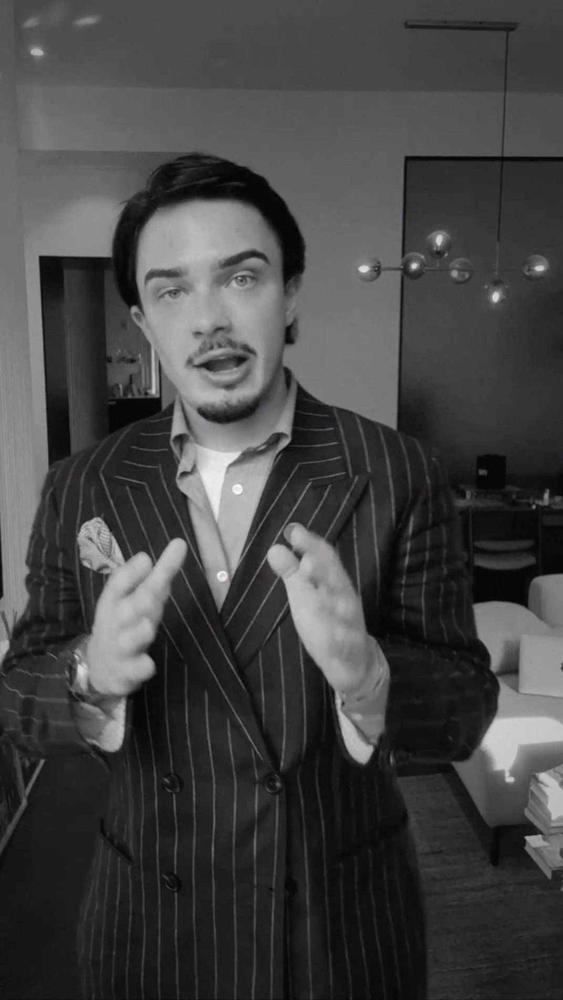
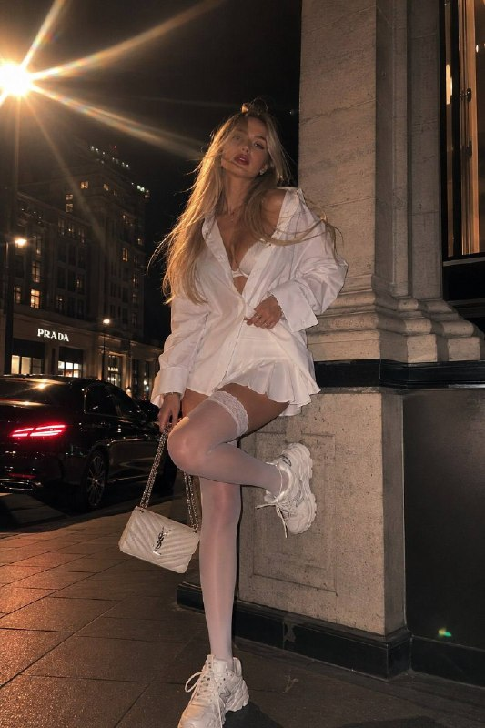
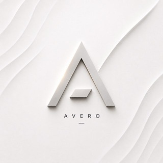

Рекламный концепт / демо из архива
Lumière
Свет и детали в коротком рекламном видео.
ВИДЕОМОНТАЖ / AVERO
Reels, рекламные ролики и AI-визуалы.
Собираю идею, кадры и звук в одно целое.
Видео и AI-визуалы.
Материалы Avero в разных форматах.
Рекламный концепт / демо из архива
Свет и детали в коротком рекламном видео.

00:14Короткий формат / демо из архива
Вертикальное видео. Быстрая смена настроения.

Статичные AI-кадрыРаботы с пометкой «демо из архива» — демонстрационные материалы Avero, а не заказы клиентов. Новые проекты будут появляться здесь и в канале.
Канал AveroОдин ролик или серия контента.
Начнём с того, где и для кого вы хотите его показать.
Выделить главное, убрать паузы и собрать короткое видео для просмотра с телефона.
Монтаж · субтитры · звук · вертикальная версия
Показать продукт или услугу через детали, движение и понятную идею. Подобрать визуальный стиль под площадку.
Референсы · композиция · цвет · версии для площадок
Создать визуалы для задумки, которой пока не хватает кадров. Работа с референсами и сборка в цельную историю.
AI-кадры · рекламные концепты · обложки
Стоимость и срок — после просмотра материалов и обсуждения задачи.
Обсудить формат
AVEROЯ Лев. В Avero работаю с монтажом и визуальными идеями.
Создаю также сайты и автоматизации в Virentora. Этот опыт переношу в работу с исходниками, версиями и правками.
В видео начинаю с идеи и ритма. AI подключаю там, где он помогает задумке.
Мои проекты в VirentoraДоговорённости — до работы.
Обратная связь — по ходу.
Задача, аудитория, площадка и примеры того, что вам нравится.
Объём, формат, стоимость, срок и порядок правок до начала работы.
Монтаж, ваша обратная связь и правки по согласованной идее.
Готовый ролик и нужные версии для выбранных площадок.
ЕСТЬ ИСХОДНИКИ. ИЛИ ТОЛЬКО ИДЕЯ.
Пришлите материал или пример.
Расскажите, какое видео хотите получить.